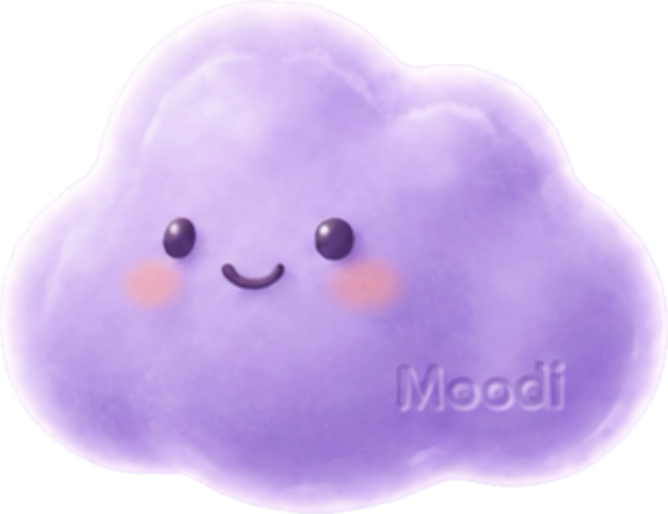

대화로 완성되는 나만의 감정 지도 가이드
How It Works
오늘 기분을 무디에게 말해보세요. 텍스트든, 이모지 터치든 좋아요.
무디가 당신의 감정 키워드를 읽고, 기분에 딱 맞는 공간을 찾아요.
내 위치 기반으로 가장 가까운 무드 스팟 3곳을 큐레이션해드려요.
감정 캘린더와 일기로 나만의 감정 아카이브를 만들어가요.
네이버 지도에서 "비 오는 날 조용한 곳"을 직접 검색하는 대신, 무디에게 기분만 말하면 감정 키워드를 분석해서 최적의 장소를 추천해드려요.
매일 기록한 감정이 캘린더 위에 이모지로 쌓여요. 이번 달 가장 많이 느낀 감정, 방문한 장소를 한눈에 확인할 수 있어요.
감정 일기를 쓰면 무디가 자동으로 감정을 분석해요. 6개월치 감정 기록은 복제할 수 없는 나만의 자산이 돼요.